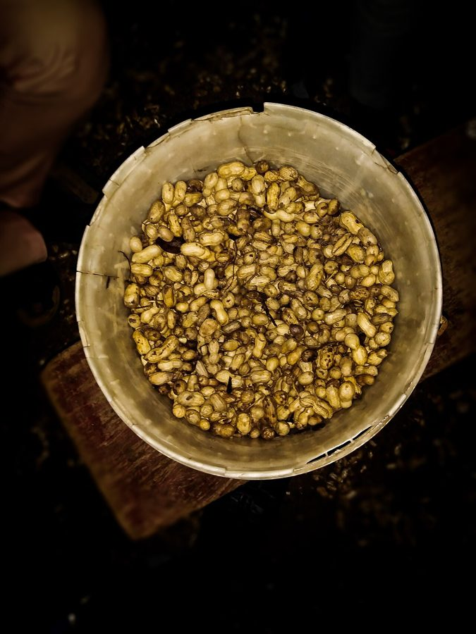

मूँगफलीGroundnut
Arachis hypogaea · Fabaceae · FLR-0207

- Scientific nameवैज्ञानिक नाम
- Arachis hypogaea L.
- Familyकुल
- Fabaceae
- Hindiहिंदी
- मूँगफली
- Local namesस्थानीय नाम
- moongphali, mungphali, mungfali, groundnut, peanut
- Status hereयहाँ की स्थिति
- cultivated
- Movementआवागमन
- Resident, here all year
- IUCNIUCN
- not evaluated
- Reviewसमीक्षा
- audited and independently read
When to look कब देखें
Expected mainly in June, July, August, September, October, November, December.मुख्यतः जून, जुलाई, अगस्त, सितंबर, अक्टूबर, नवंबर, दिसंबर में अपेक्षित।
Uses and possibilities उपयोग और संभावनाएँ
“Traditional medicine” means a documented traditional use, not a claim that it works. Nothing on this page is medical advice.
Drawn from the documented uses in the profile below, where each is labelled traditional, current or a research lead. All uses →
Tell it apart from इनसे अलग पहचानें
मूँगफली / Groundnut
Arachis hypogaea L. — Fabaceae
मूँगफली (भूमिपत्र) — दक्षिण अमेरिका से आई एक महत्वपूर्ण फसल, जो अब भारत और यूपी में व्यापक रूप से उगाई जाती है। छोटी बूटी, पत्तियाँ जोड़े में, फूल पीले-नारंगी। फूल के बाद फल की डंडी ज़मीन की ओर झुक जाती है और नीचे जाकर फल (फली) बन जाती है — यही तो मूँगफली की खूबी है ("hypogaea" का मतलब ज़मीन के नीचे)। फली में 1-3 दाने होते हैं, तेल से भरे हुए। बहुत पौष्टिक, दाल और तेल दोनों का काम करती है। गर्मी और बरसात दोनों में उगती है।
Quick Identification त्वरित पहचान
| Feature | Description |
|---|---|
| Plant form | Bushy annual, 30–50 cm, erect or spreading, branched |
| Leaves | Alternate, compound, pinnate, 2–4 pairs of leaflets, 1–3 cm each |
| Flowers | Yellow or orange, irregular (papilionaceous), 1–1.5 cm, in racemes |
| Fruit/Pod | Underground, within soil, 2–5 cm, thin-shelled, 1–3 seeds per pod |
| Seeds | Reddish or whitish, oil-rich, 0.8–1.2 cm, in papery capsule |
| Height | 30–50 cm |
| Growth habit | Geocarpic (fruit develops underground) |
Field tip: An annual legume with compound leaves and yellow-orange flowers. After flowering, the fruit-bearing stalk bends down and penetrates the soil, where the pod develops underground. Fruits are excavated at harvest to reveal the distinctive peanuts.
Morphology आकारिकी
| Measurement | Range |
|---|---|
| Plant height | 30–50 cm |
| Leaflet count | 4 per leaf (two pairs) |
| Leaflet length | 1–3 cm |
| Flower diameter | 0.8–1.5 cm |
| Pod length | 2–5 cm |
| Pod width | 1–1.5 cm |
| Seed weight | 0.5–0.8 g per seed |
Habit: Annual herb; 30–50 cm tall; stem herbaceous, branched, glabrous or slightly hairy; taproot system with lateral roots and root nodules (nitrogen-fixing symbiosis).
Leaves: Alternate, compound, pinnate; 2–3 pairs of leaflets; leaflets obovate-oblong, 1–3 cm long, apex rounded, margin entire, glabrous or slightly hairy.
Flowers: Zygomorphic (butterfly-shaped), yellow to orange, 0.8–1.5 cm; borne in short axillary racemes; calyx campanulate, persistent; corolla with standard, wings, and keel; stamens 10 (9 fused, 1 free); ovary superior.
Fruits (pods): Developing underground (geocarpic). After pollination, the fruit-bearing stalk elongates, bends downward, and penetrates the soil. The pod develops within the soil as a thin-shelled, oblong capsule, 2–5 cm long, 1–1.5 cm wide, containing 1–3 seeds. Pod surface is reticulate (net-like).
Seeds (peanuts): Oblong, 0.8–1.2 cm, with reddish or whitish seed coat (testa), oily endosperm, two cotyledons, enclosed in papery coat (testa).
हिंदी: छोटी बूटी, पत्तियाँ जोड़े में। पीले फूल। फल ज़मीन के नीचे बनते हैं। दाने तेल से भरे हुए।
Behaviour & Ecology व्यवहार और पारिस्थितिकी
Arachis hypogaea is an annual herbaceous legume native to South America, widely cultivated throughout tropical and subtropical regions. The plant is notable for its geocarpic reproductive strategy: after pollination, the fruit stalk (gynophore) elongates, bends downward, and penetrates the soil, where the pod develops in an anaerobic (oxygen-poor) environment.
The plant forms symbiotic associations with nitrogen-fixing rhizobium bacteria in root nodules, improving soil nitrogen content. The plant is moderately drought-tolerant and grows well in well-drained sandy loam soils. In Basti and eastern UP, the crop is grown both as a monsoon crop (June–November) and as a winter crop (October–March), depending on soil moisture and irrigation availability.
The plant's canopy development shades the soil, reducing soil evaporation and moderating surface temperature. This provides a microhabitat for various soil organisms and reduces erosion.
हिंदी: फल ज़मीन के नीचे बनता है — विशेष तरीका। नाइट्रोजन बढ़ाता है। सूखा सहन कर सकता है। गर्मी-बरसात दोनों में उगता है।
Life Cycle / Phenology जीवन चक्र
| Month | Event |
|---|---|
| May–June | Seed sowing; germination and seedling emergence |
| June–July | Vegetative growth; leaf expansion and branching |
| July–August | Flowering; flower production from lower axils |
| August–September | Pod development underground; continued flowering |
| September–October | Pod maturation; seed filling within pods |
| October–November | Harvest-readiness; pods mature, oil content peaks |
Total growing period: 120–150 days (depends on variety and season). From flower to mature pod: 40–50 days.
हिंदी: मई-जून: बीज बोना। जून-अगस्त: पत्ती और फूल। अगस्त-सितंबर: फल ज़मीन में। अक्टूबर-नवंबर: फसल तैयार।
Cultivation Calendar कृषि कैलेंडर
| Stage | Month(s) |
|---|---|
| Land preparation and soil treatment | April–May (monsoon); September–October (winter) |
| Seed selection and treatment | May; October |
| Sowing of seeds | May–June (monsoon); October–November (winter) |
| Germination and seedling growth | June; November |
| Vegetative growth and flowering | July–August; November–December |
| Pod development (underground) | August–September; December–January |
| Harvest of mature pods | October–November; January–February |
| Post-harvest drying and storage | November; February |
Associated Species / Interactions संबंधित प्रजातियाँ
- Intercropping: Often grown with Elephant Foot Yam, pulses, or cereals in rotation
- Rhizobial association: Nitrogen-fixing bacteria in root nodules
- Nodule-forming: Symbiotic relationship with Rhizobium sp. and Bradyrhizobium sp.
- Soil improvement: Leaves soil richer in nitrogen for subsequent crops
Pests and Diseases कीट और रोग
- Leaf spots: Fungal diseases (Cercospora, Phaeoisariopsis) cause leaf spotting in wet seasons; manageable by fungicide sprays or resistant varieties
- Pod rots: Aspergillus and other fungi can infect developing pods in waterlogged conditions; ensure good drainage
- Aflatoxin contamination: Aspergillus flavus produces aflatoxin in poorly stored nuts; requires proper drying and storage
- Stem rots: Sclerotinia can cause stem rotting in wet conditions
- Generally hardy: Compared to other legumes, groundnut tolerates most pest and disease pressures
Agricultural / Human Relevance कृषि प्रासंगिकता
Food and nutritional value: Groundnut seeds are rich in oil and protein, with some carbohydrate. The nuts are consumed fresh, roasted, boiled, or processed into peanut butter, oil, or flour. A 100 g serving provides approximately 565 kcal, substantial plant-based protein, vitamin E, and various minerals.
Oil production: Groundnut oil is extracted and used for cooking, cosmetics, and industrial applications. The oil is relatively high in linoleic acid (polyunsaturated fat).
Livestock feed: Groundnut cake (the residue after oil extraction) is used as high-protein livestock feed and manure.
Crop rotation value: As a legume, groundnut improves soil nitrogen content, making it valuable in crop rotation systems. A groundnut crop adds nitrogen of fixed nitrogen to the soil.
Cash crop importance: Groundnut is a major cash crop in eastern UP, providing income to farming families. Market prices fluctuate seasonally and by international supply.
Medicinal use: In Ayurvedic and folk medicine, groundnuts are considered warming and nourishing. The oil is used in traditional massage and cooking preparations.
हिंदी: बहुत पौष्टिक दाल-तेल दोनों। तेल खाना पकाने में प्रयोग। केक जानवरों को खिलाया जाता है। खेत की मिट्टी में नाइट्रोजन बढ़ाता है। किसानों के लिए नकदी फसल।
Expected Locally स्थानीय रूप से अपेक्षित
Not a field record. Written from published accounts for eastern Uttar Pradesh. No confirmed local sighting yet — if you have seen it, that is what the atlas needs.
अभी तक स्थानीय पुष्टि नहीं। यह विवरण प्रकाशित स्रोतों से है, किसी अवलोकन से नहीं।
Arachis hypogaea is expected as a widely cultivated crop in Basti district during both monsoon (June–November) and winter (October–March) seasons. The crop is visible as low bushy plants in fields with yellow flowers in midsummer and winter seasons.
Distribution वितरण
Global range: Native to South America; now the world's most important legume crop, cultivated in over 100 countries.
In India: Widely cultivated as a kharif and rabi crop throughout the Indo-Gangetic plain, particularly in northern and western regions.
In Uttar Pradesh: Grown in all agro-climatic zones; important in both rainfed and irrigated systems.
In Basti district / eastern UP: Commonly cultivated; important monsoon and winter crop for local farmers and markets.
Research Questions शोध प्रश्न
Anyone can investigate these | कोई भी इन प्रश्नों की जाँच कर सकता है
- How deep do groundnut fruit stalks penetrate the soil, and what soil texture favors pod development? — Excavate plants at different growth stages; measure stalk depth and pod burial depth.
- How much nitrogen does a groundnut crop fix in the soil, and how much remains available for the next crop? — Test soil nitrogen before and after cropping; compare with unfixed controls.
- Which pests damage groundnut plants above ground, and which damage developing pods? — Inspect plants and excavate pods at different growth stages; identify damage types and pests.
- How do early-, medium-, and late-maturing varieties differ in yield and oil content in your local conditions? / क्या जल्दी पकने वाली किस्में अधिक तेल देती हैं? — Grow different varieties side by side; measure yield and oil content.
- Can intercropping groundnut with pulses or cereals reduce pest/disease incidence without reducing groundnut yield? — Compare monoculture vs. intercrop systems.
Similar Species मिलती-जुलती प्रजातियाँ
| Species | How to tell apart | हिंदी | |
|---|---|---|---|
| Elephant Foot Yam (Amorphophallus paeoniifolius) | Huge single tripinnate leaf; tuber above ground; different family | बहुत बड़ी पत्ती, कंद ऊपर | |
| Vigna unguiculata (Cowpea) | Taller (60–100 cm); leaves with 3 leaflets; pods above ground | काला चना — लंबा, फली ऊपर | |
| Cicer arietinum ([[chickpea\ | Chickpea]]) | Smaller leaflets (0.5–1 cm); finer stems; pods above ground | चना — पतला, छोटी पत्तियाँ |
Field rule: A bushy annual legume with compound pinnate leaves (2 pairs of leaflets), yellow flowers, and the distinctive characteristic that fruit develops underground in pods containing 1–3 oily seeds is groundnut.
Taxonomy & Classification वर्गीकरण
Original description. Arachis hypogaea was described by Carl Linnaeus in 1753 in Species Plantarum. The genus name Arachis is derived from the Tupi (South American indigenous) word "arachide," meaning "peanut." The specific epithet hypogaea is from Greek hypo (under) and gaea (earth), referring to the underground fruit development.
Subspecies. Two subspecies are recognized: subsp. hypogaea (Spanish-type) with two seeds per pod and subsp. fastigiata (Valencia/Virginia-type) with three seeds per pod; both are cultivated in India.
Family and order placement. Fabaceae (Legume/Pea family), order Fabales. The family includes beans, peas, chickpeas, and other nitrogen-fixing crops.
Phylogenetic notes. Arachis hypogaea is closely related to wild Arachis species from South America and represents a stable allotetraploid (chromosome doubling of hybrid origin).
IUCN status rationale. Not evaluated. Widely cultivated; not assessed for conservation status.
Photo Gallery फोटो गैलरी
Photos needed आवश्यक फोटो
- [ ] Whole plant in field showing bushy form (पूरा पौधा)
- [ ] Flowers showing yellow color and arrangement (पीले फूल)
- [ ] Excavated pods showing underground development (खोदे हुए फल)
- [ ] Mature seeds (पके दाने)
No photos yet — add field photos to media/species/groundnut/ and run node scripts/sync_photos.js.
References संदर्भ
- Linnaeus, C. (1753). Species Plantarum, Vol. 1. Laurentii Salvii, Stockholm.
- Smartt, J. (1994). The Groundnut Crop: A Scientific Basis for Improvement. Chapman & Hall, London.
- Indian Council of Agricultural Research (2021). Handbook of Agriculture. ICAR, New Delhi.
- Chadha, K.L. (2010). Handbook of Horticulture. Indian Council of Agricultural Research, New Delhi.
- Botanical Survey of India. State Flora Series: Flora of Uttar Pradesh. BSI, Kolkata.
- GBIF Occurrence Data — Arachis hypogaea, India (2024–2026).
Source file: species/flora/crops/groundnut.md